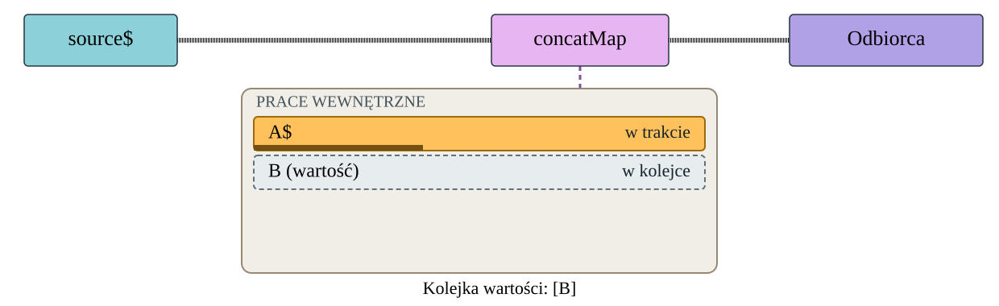

Scena
Checkpoint
← Cofnij
Dalej →
Odtwórz / pauza
MANUAL · M
READY · R
Pokaż wynik · F
Sterowanie · U
Audyt prototypów
Obecny concatMap — kadry odniesienia
Kadr
READY
Pytanie przy B
FINISHED

Notatki i stan diagnostyczny